. The system has one differential variable, namely . If we specify 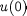 , then we can calculate 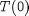 from 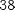, 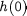 from , from and finally 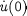 from . This is clearly an index-1 DAE system.
. The system has one differential variable, namely . If we specify 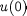 , then we can calculate 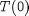 from 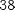, 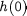 from , from and finally 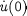 from . This is clearly an index-1 DAE system.Consider a well-stirred tank used to heat up a single-component stream:
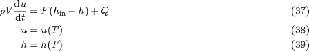
To define this system fully, we need an additional relation characterising the heating rate . For instance, could be described by a heat-transfer mechanism from a steam jacket at a given temperature :
Overall, equations 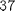 to form a DAE system in the 4 variables , , and . The system has one differential variable, namely . If we specify 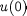 , then we can calculate 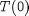 from 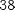, 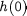 from , from and finally 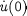 from . This is clearly an index-1 DAE system.
Of course, corresponds to only one permissible heat-transfer mechanism. If, for instance, we were using electrical heating, then we could vary directly, so instead of we could have:
where is a given function of time. Again, this does not change the nature (i.e. the index) of the DAE system.
On the other hand, we could well be interested in determining the variation of that would produce a certain desired variation in the exit temperature . In this case, we would replace (or 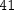) with:
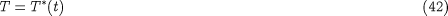
where 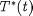 is a given function of time.
Of course, equations to are always true, so our DAE system now comprises , , , 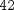 and the same set of variables (i.e., , and ) as before. It also still has differential variable . If we specify , we can still calculate from and from . However, when we come to consider , we encounter a problem since the we calculated from may not be the same as 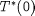 . In any case, we cannot calculate from any one of the existing equations!
Again, this is a high index problem. In fact, if we combine and , we see that:
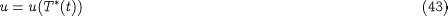
and, therefore, it is not possible to specify an arbitrary initial value for . Furthermore, by differentiating 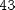 with respect to time, we get:
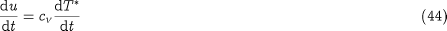
where 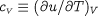 , and this together with yields:
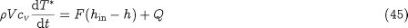
which is an additional restriction that the initial values of the variables must satisfy. Overall, we have 5 equations in to , and in 5 initial values, i.e., , , and – therefore no arbitrary initial condition may be imposed on this system.